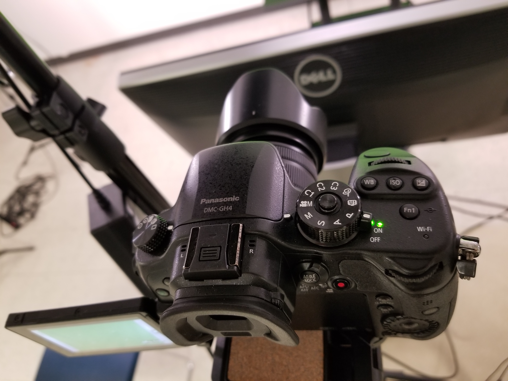

When you arrive at the studio, you'll want to turn on the lights in the ceiling, as well as the 5 studio LED lights. The picture below shows the location of the power switch on the back of the light. Go around the room and turn them on. You should not change the location of any of the lights, though you might want to adjust the height of the center one.
After turning on the lights, turn on the camera. The arrow in the picture shows where the switch is located. Having the camera on will allow for a video feed to be streamed to the capturing computer.